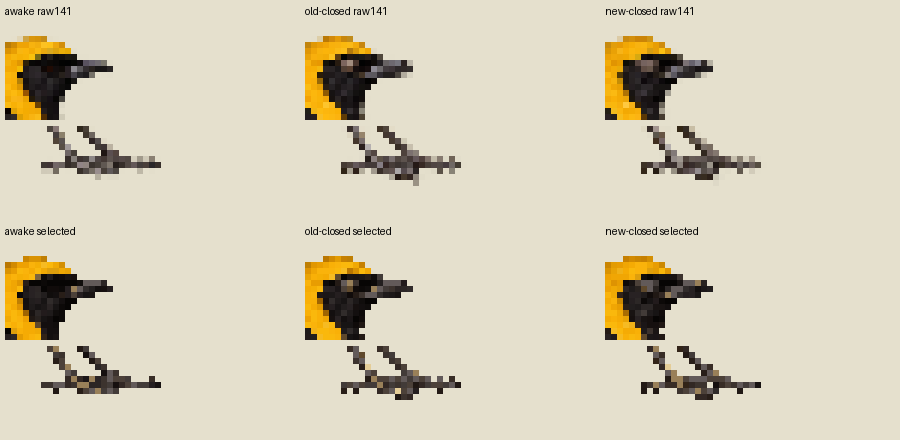
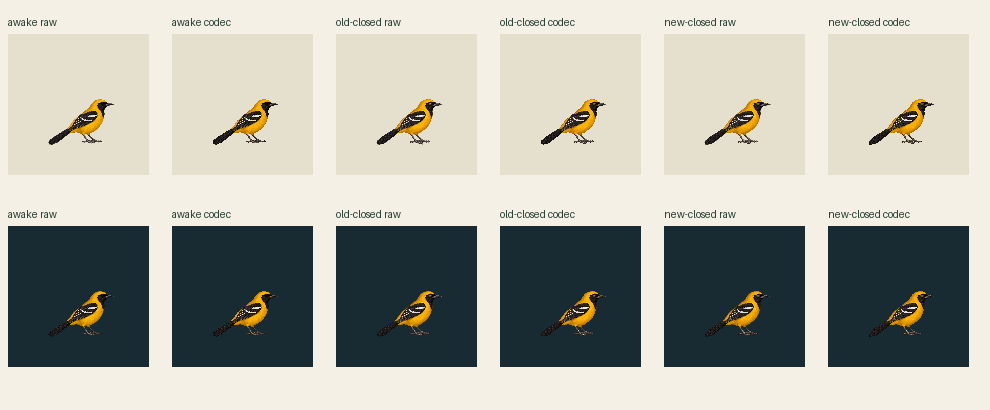

Same exact awake and shared palette, same141×141 world canvas at density1, same origin and authored clock. Each image stays at its true141-pixel scale. X/Y obscure method names on this initial screen; prior art may be recognized, so this is not a fully blinded review.
X · raw · light
X · codec · light
Y · raw · light
Y · codec · light
X · raw · dark
X · codec · dark
Y · raw · dark
Y · codec · dark
One nonlooping episode: awake60 / closed3 / awake27 ticks at30Hz. Closed phase lasts100ms; final awake is held after3000ms. Both methods share the same awake PNG within each raw/codec variant. No root travel, body bob, intermediate drawing or loop reset.
Raw panels preserve wholecanvas nearest sampled RGBA. Codec panels share one63-color opaque palette plus transparent, alpha128, no dither. No eye/body/feet painting, per-pose fitting, crop, snap or warp. Source-only comparison; contacts[]/geometryReviewed=false/supportWorld=null. Physical support and current Mac admission unapproved.

